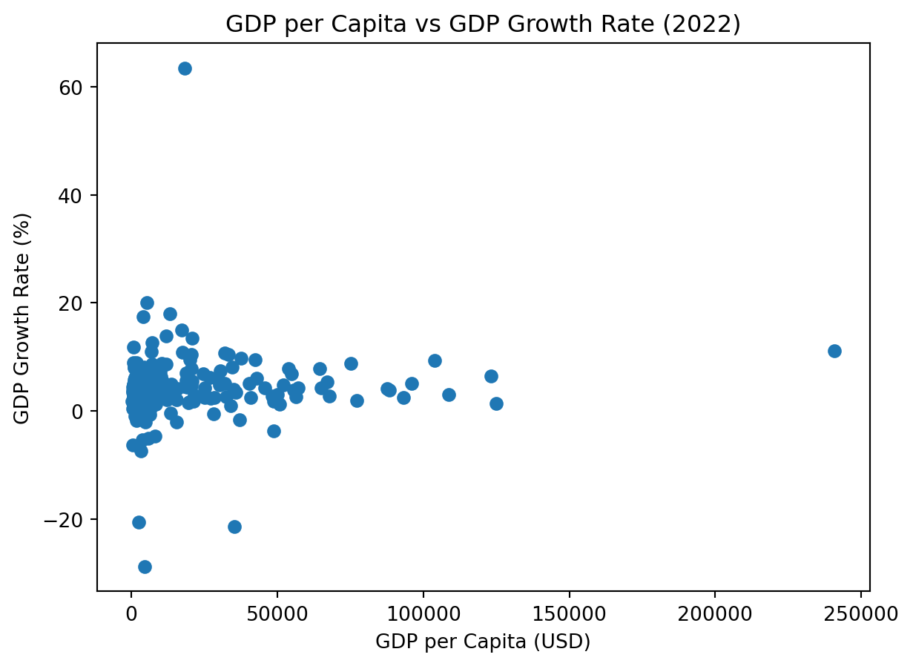
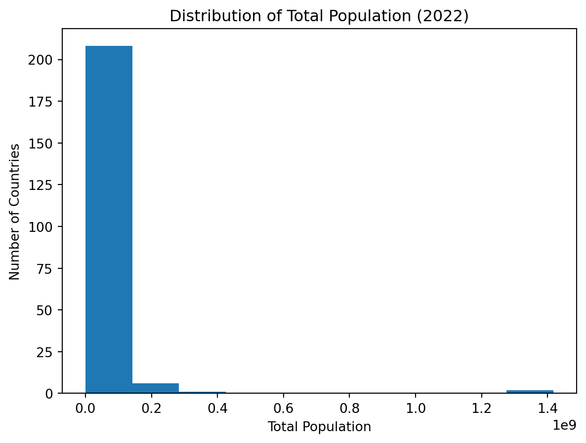

import pandas as pd
import matplotlib.pyplot as plt
wdi_df = pd.read_csv("wdi.csv")World Development Indicators dataset 2022
Load dataset and import library
Exploratory Data Analysis
GDP growth rate
wdi_df["gdp_growth_rate"].describe()count 202.000000
mean 4.368901
std 6.626811
min -28.758591
25% 2.438593
50% 4.204431
75% 6.200000
max 63.439864
Name: gdp_growth_rate, dtype: float64The average GDP growth rate across countries in 2022 was about 4.37%, but the distribution shows substantial variation. While half of the countries had growth rates between approximately 2.44% and 6.20%, some countries experienced severe economic contraction, with the lowest growth rate close to -29%. In contrast, a few countries recorded extremely high growth rates, with the maximum exceeding 63%, indicating that economic growth were highly uneven across countries.
GDP per capita
wdi_df["gdp_per_capita"].describe()count 203.000000
mean 20345.707649
std 31308.942225
min 259.025031
25% 2570.563284
50% 7587.588173
75% 25982.630050
max 240862.182448
Name: gdp_per_capita, dtype: float64GDP per capita shows a highly unequal global distribution. The median GDP per capita is around 7,588 USD, which is much lower than the mean value of about 20,346 USD, indicating strong right-skewness. This skewness is driven by a small number of very wealthy countries, with the maximum GDP per capita exceeding 240,000 USD, while the poorest countries have values as low as around 259 USD. This highlights large global disparities in income and economic development.
Total population
wdi_df["total_population"].describe()count 2.170000e+02
mean 3.653645e+07
std 1.410583e+08
min 1.131200e+04
25% 8.087260e+05
50% 6.465097e+06
75% 2.606942e+07
max 1.417173e+09
Name: total_population, dtype: float64The distribution of total population is extremely right-skewed. While the median country population is about 6.5 million, the mean is much higher at approximately 36.5 million, reflecting the presence of a few very large countries. The smallest country has a population of just over 11,000, whereas the largest exceeds 1.4 billion people. This large variation demonstrates the wide differences in country sizes and population scales across the world.
Visualisations


Summary table of key statistics
| Indicator | Mean | Median |
|---|---|---|
| GDP growth rate | 4.37 | 4.20 |
| GDP per capita | 20345.71 | 7587.59 |
| Total population | 36536448 | 6465097 |
Exploratory Data Analysis
The global economic landscape in 2022 was shaped by post-pandemic recovery and significant inflationary pressures (International Monetary Fund 2022). From the data used in this report from World Bank (2022), we can see the overall patterns of the economic landscape under this circumstance.
As shown in Figure 1, countries with higher GDP per capita do not necessarily experience higher GDP growth rates, indicating that economic growth and income level are not perfectly correlated. In Figure 2, we can see a right skewed distribution of population. Table 1 summarises mean and median values for GDP growth rate, GDP per capita, and total population in 2022.
References
International Monetary Fund. 2022. “World Economic Outlook: Countering the Cost-of-Living Crisis.” Washington, DC: IMF. https://www.imf.org/en/Publications/WEO/Issues/2022/10/11/world-economic-outlook-october-2022.
World Bank. 2022. “World Development Indicators 2022.” The World Bank Group. https://databank.worldbank.org/source/world-development-indicators.